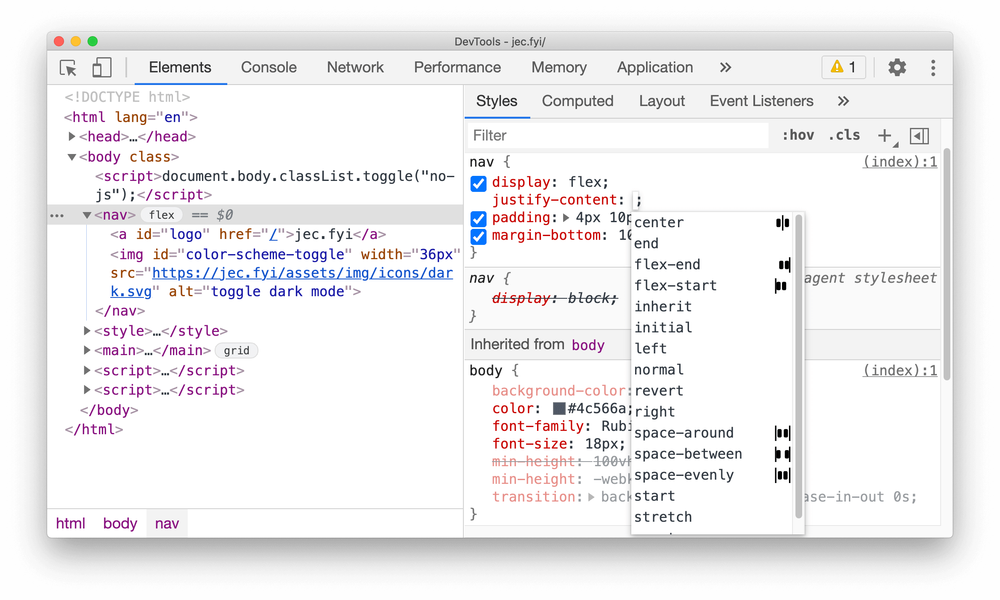

最近发布的 Chrome 88 对 Chrome DevTools 进行了重大更新，包括改进的网络调试、实验性的 CSS Flexbox 调试工具、改进的框架详细信息视图、新的 WASM 调试功能以及总体性能上的提高。
网络选项卡提供了三种旨在简化调试过程的新功能：
复制值（Copy value），直接从网络（Network）选项卡中复制请求属性。复制堆栈跟踪（Copy stack trace）选项，从单个网络请求中复制网络启动器的堆栈跟踪。CSS Flexbox 是一种功能强大的设计工具，但由于它在两个轴上进行操作，因此通常很难调试。为了简化调试过程，Chrome 提供了两个新标志。第一个标志出现在元素层次结构视图上，并标记了带有 display：flex 的元素。
第二个标志是上下文敏感的对齐指示符，该指示符基于以下 flexbox 属性：
flex-directionalign-itemsalign-contentalign-selfjustify-itemsjustify-content同时也会顾及到基于以下属性的方向：
flex-directiondirectionwriting-mode要使用 Flexbox 的调试，开发人员需要在“设置”>“实验”标签下启用它。

Chrome 88 Devtools 还提供了改进的框架详细信息视图，其中包括有关跨域隔离信息状态的额外信息、有关框架 Web Worker 的专用信息，以及发现哪个框架触发了另一个窗口打开的功能。
Chrome 88 还使 Wasm 调试与现有的 JavaScript 调试功能保持一致。在打断点暂停代码执行时，开发人员可以将鼠标悬停在变量上以查看其当前值，或在控制台中对其进行计算。
最后，从 JavaScript 编译速度的角度来说，由于减少了启动过程中的序列化、解析和反序列化所带来的性能开销，DevTools 现在的启动速度提高了近 40％。
Chrome DevTools 提供了丰富的实用程序集以调试 Web 应用，并且用于大多数基于 Chromium 的浏览器中。Chrome 开发团队将继续改进 DevTools，并在每次发布新版本的 Chrome 时都提供新功能。开发者可以在 Google 开发者网站上跟进最新功能，并在邮件列表中讨论可能出现的功能、更新和漏洞。
如果发现译文存在错误或其他需要改进的地方，欢迎到 掘金翻译计划 对译文进行修改并 PR，也可获得相应奖励积分。文章开头的 本文永久链接 即为本文在 GitHub 上的 MarkDown 链接。
掘金翻译计划 是一个翻译优质互联网技术文章的社区，文章来源为 掘金 上的英文分享文章。内容覆盖 Android、iOS、前端、后端、区块链、产品、设计、人工智能等领域，想要查看更多优质译文请持续关注 掘金翻译计划、官方微博、知乎专栏。